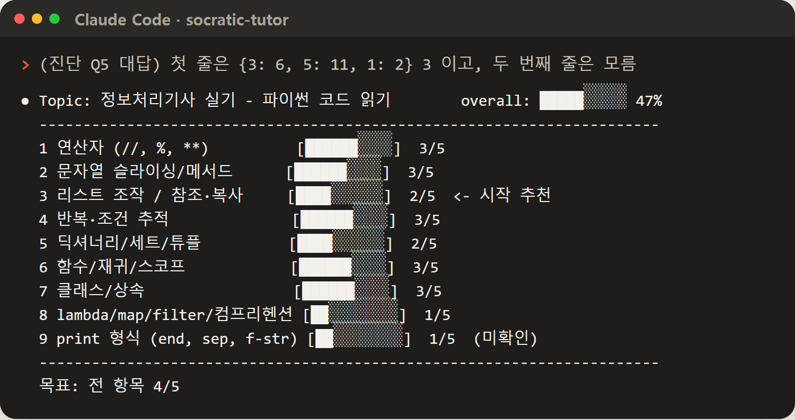
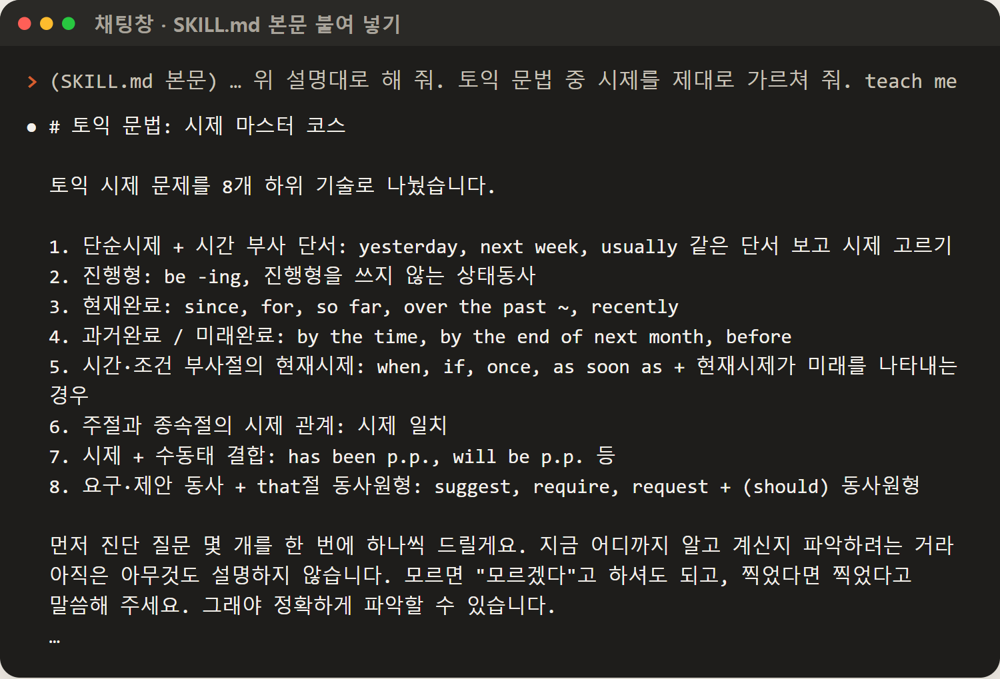
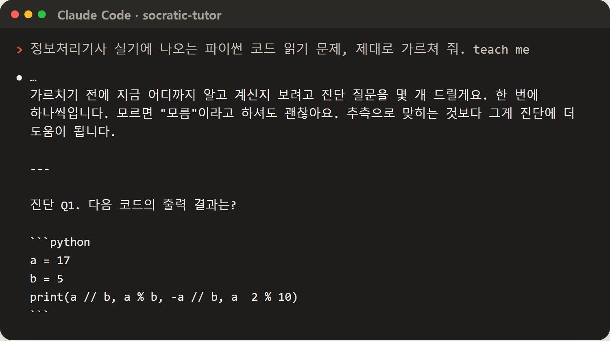
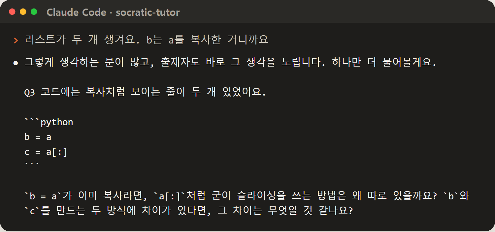
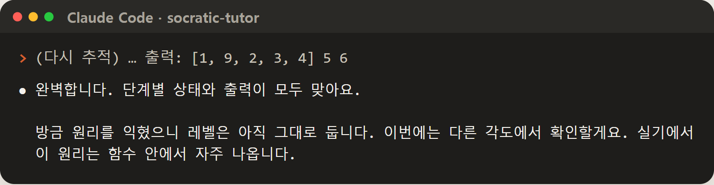
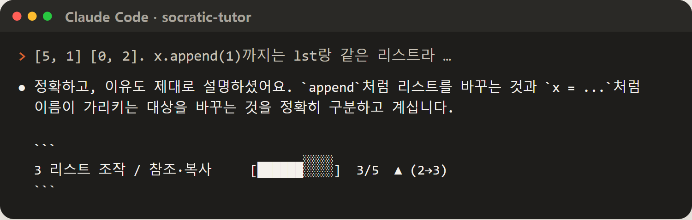
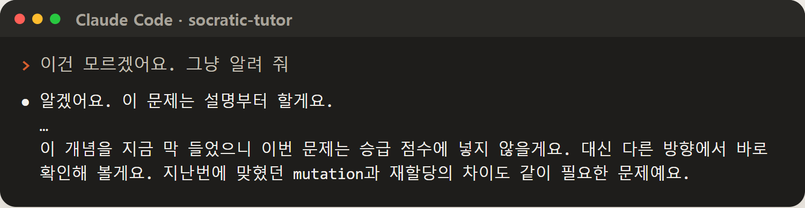
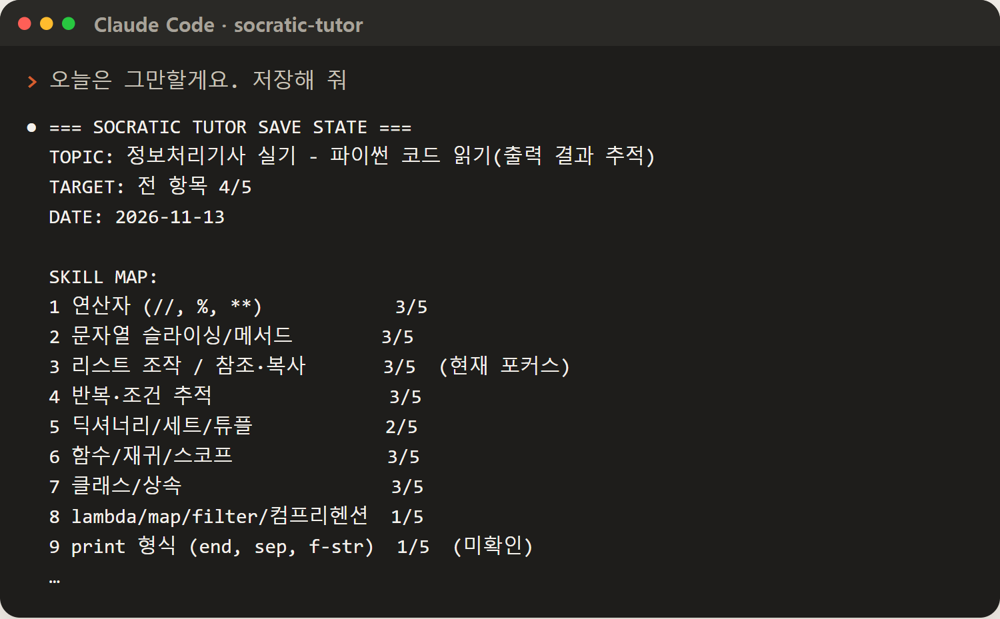
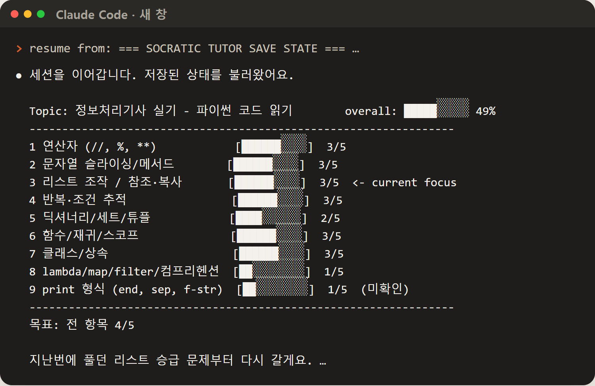

월가 회사 제인 스트리트가 깃허브에 공개한 스킬(socratic-tutor)이에요. AI가 가르치기 전에 시험부터 보고, 배울 걸 여러 칸으로 쪼개 칸마다 0~5점을 매겨요. 점수는 다른 문제로 두 번 넘게 증명해야 오르고, 예고 없는 복습에서 틀리면 내려가요. 모든 칸이 4점이 돼야 종합 시험을 보고 끝나요. 아래 화면은 빈 설정으로 새로 깐 클로드 코드에서 정처기 실기 파이썬으로 실제로 돌린 대화예요. MIT 라이선스, 무료.

저장소(github.com/janestreet/agent_skills)에서 socratic-tutor 폴더를 받아 스킬 폴더에 복사해요. 모든 프로젝트에서 쓰려면 내 홈의 .claude/skills/ 안에(윈도우는 C:Users내이름.claudeskills), 한 프로젝트에서만 쓰려면 그 프로젝트의 .claude/skills/ 안에 넣어요. 아래 '복사해서 쓰기'의 명령 한 줄로도 돼요. 그다음 클로드 코드를 새로 켜요.
socratic-tutor/SKILL.md 파일을 열어 맨 위 ---로 감싼 부분 아래 본문을 통째로 복사해 대화창 첫 메시지에 붙여 넣고, 그 아래에 배우고 싶은 걸 적어요. 매번 붙이기 귀찮으면 챗GPT 프로젝트 지침·클로드 프로젝트 지침에 넣어 두세요.

'○○ 제대로 가르쳐 줘(teach me)', '○○ 문제 내 줘(quiz me)'처럼 말해요. 'X가 뭐야?'처럼 한 번 묻는 질문엔 수업을 시작하지 않고 그냥 답해요(헷갈리면 '빠른 답이 좋아요, 제대로 배울래요?'라고 되물어요).

모르면 '모름', 찍었으면 '찍었어요'라고 해요. 진단 문제(3~5개)가 끝나면 실력표가 나오고, 어디부터 할지 추천해요. 순서는 바꿔 달라고 해도 돼요.
틀려도 정답을 바로 안 알려 줘요. 내 생각의 어디가 틀렸는지 보이게 더 좁은 질문을 해요. 두세 번 막히면 그때 짧게 설명하고 바로 다른 각도로 다시 물어요.

방금 들은 걸 맞힌 건 점수에 안 넣어요. 다른 문제로 한 번 더 통과해야 한 칸 올라가요. 점수가 바뀔 때마다 실력표를 다시 그려 줘요.


그 문제만 바로 정답과 설명을 줘요. 대신 그 문제는 점수에 안 치고, 다른 문제로 다시 확인해요.

'저장해 줘'(save state)라고 하면 주제·실력표·헷갈린 것·풀던 문제를 블록 하나로 뽑아 줘요. 메모장에 저장해 두고, 다음에 새 창을 열어 맨 앞에 'resume from:'을 적고 그 블록을 붙여 넣으면 풀던 문제부터 이어서 해요.


모든 칸이 목표(기본 4/5, '완전히 마스터'라고 하면 5/5)에 닿아야 끝나요. 그다음 전 항목 섞은 종합 시험을 보고, 통과하면 최종 실력표와 약한 곳 정리를 줘요. 못 넘으면 다시 수업. 중간에 예고 없이 지난 칸을 다시 묻고, 틀리면 점수를 내려요(SKILL.md 원문).
모든 프로젝트에서 쓰기 — 그다음 클로드 코드 다시 켜기
git clone --depth 1 https://github.com/janestreet/agent_skills $env:TEMPagent_skills; mkdir -Force $HOME.claudeskills; Copy-Item -Recurse $env:TEMPagent_skillssocratic-tutor $HOME.claudeskills\
터미널
git clone --depth 1 https://github.com/janestreet/agent_skills /tmp/agent_skills && mkdir -p ~/.claude/skills && cp -r /tmp/agent_skills/socratic-tutor ~/.claude/skills/
클로드 코드·채팅창
정보처리기사 실기에 나오는 파이썬 코드 읽기 문제, 제대로 가르쳐 줘. teach me
클로드 코드·채팅창
엑셀 피벗 테이블이랑 XLOOKUP, 혼자 쓸 수 있을 때까지 가르쳐 줘. teach me
목표를 5점으로
토익 문법 시제, 완전히 마스터할 때까지 가르쳐 줘(5/5까지). teach me
수업 중 아무 때나
show progress / harder / easier
그만할 때 → 다음 새 창 첫 메시지
저장해 줘 resume from: (저장 블록 붙여 넣기)
도움이 되셨다면
@ai.antenna.kr
에서 바로 쓰는 AI 활용법을 계속 올립니다.